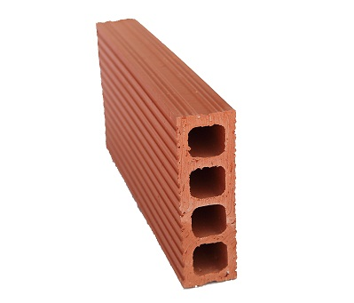

Bloque h7
Especificaciones
| Largo | 310mm |
| Ancho | 195mm/td> |
| Tolerancia dimensional segun NTC 4205 +/- | 2% |
| Textura | Rayada i lisa |
| Color | Rojo, claro y oscuro |
| Acabado | Mate o vitrificado |
| Rendimiento | 16 und x m² |
| Peso | 4Kg |
| Resistencia a compresion | Entre 100Kgf/m² y 215 100Kgf/m² |
| Segun NTC 4205, minima | 50 Kgf/m² |
| Absorcion de Agua | Entre el 3% y el 12% |
| Segun NTC 4205, maxima | 13,5% |